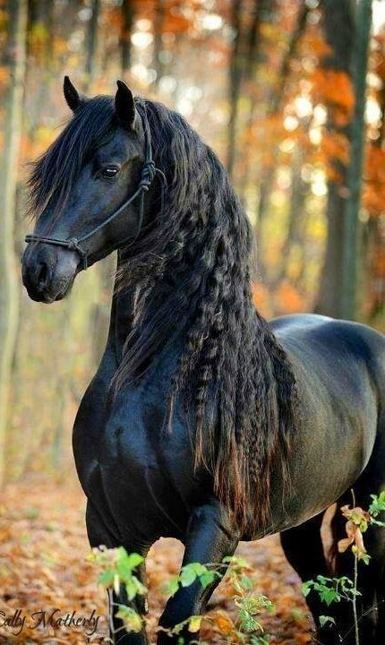
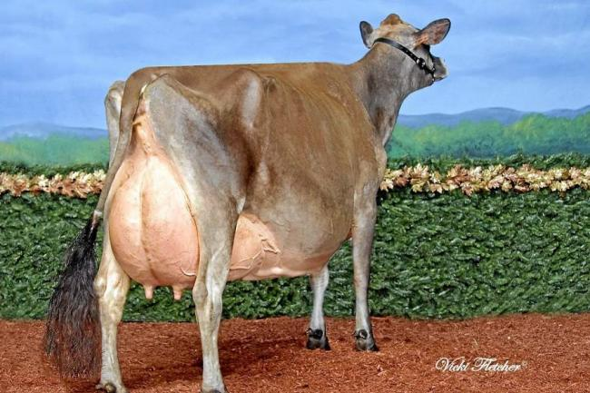

Tenemos disponibles saltos de caballos de alta escuela a muy bueb precio y 100% garantizados

La ganadería representa una importante actividad comercial y de subsistencia en muchos países. La cría saludable de una vaca de leche debe contemplar el bienestar del animal y optimizar su productividad. A continuación, te resumimos consejos fundamentales para ayudarte en la crianza de tus bovinos.